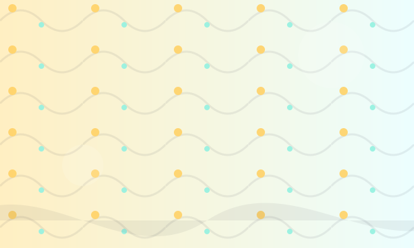

Gather in tuned company — a cohort model for curious ears
Reserve a seat in a limited-cycle cohort where sound maps an hour of attention. Gentle rituals, thoughtful pacing, and a palette of resonances tuned to group intention.

Myths & real talk
Myth
Sound baths are only for deep meditators.
Truth
We design sound gatherings for a range of curiosities — from restful presence to vivid sensory recalibration.
Foundations
Tuned Intent
Sessions are sequenced with intention—entrance, attunement, release.
Human-scaled cohorts
Small, steady groups that build familiarity across a cycle.
Transparent safety
We list contraindications and offer alternatives for comfort.
Proof gallery
Rotating testimonials and badges from partners and press.
“A delicate itinerary of sound—left me calmer and oddly more alert.” — S. (attendee)
“We brought a team for a restorative workshop; the guidance was exact and generous.” — A. (organizer)
“I booked a private session for post-op recovery and was amazed by the care.” — J. (client)
Quick questions
What should I bring?
Comfortable layers, a mat or blanket if you prefer, and an open curiosity. We provide bolsters and blankets upon request.
Who should avoid sessions?
Contraindications: pregnancy (first trimester without physician clearance), uncontrolled epilepsy, recent head injury, active severe psychiatric events. If you have medical concerns, consult your provider and contact us prior to attending.
Ready to reserve a spot?
Join a cohort, book a private hour, or ask us about group rates.